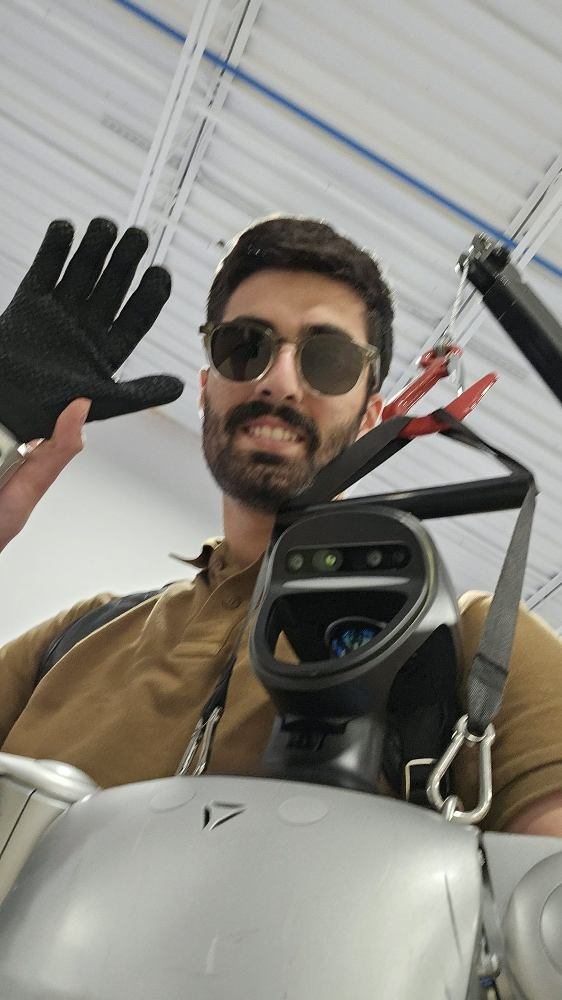
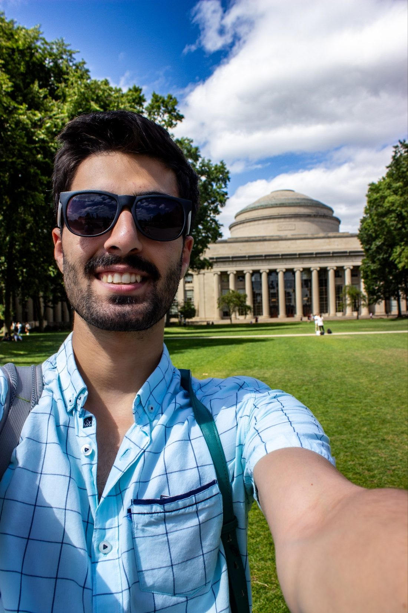
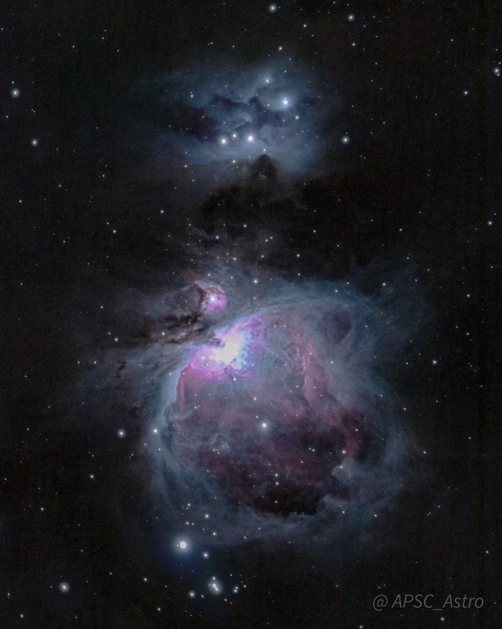

2027
Control Barrier Functions for Adaptive Stabilization of Fully Unknown Underactuated Nonlinear Systems
IEEE Conference on Decision and Control (CDC)
Control · Robotics · Physical AI
I'm Kasra Sinaei, a PhD candidate in Electrical Engineering at Penn State working where control theory meets modern robot learning. I build control barrier functions into adaptive controllers and vision-language-action models, so a robot can keep learning without ever leaving its safe set.
closed-loop trajectory
barrier h(x) = 0
live CBF-QP safety filter
About
I am pursuing graduate studies in control, robotics and physical AI at the Pennsylvania State University, where I research safety-critical control via barrier functions. My work develops methods that fuse formal safety guarantees with model-free learning algorithms and the emerging class of vision-language-action models — the goal being a robot whose behaviour you can bound before you deploy it, not after. My undergraduate research was on legged locomotion and humanoid gait control.
Along the way I have studied and published on control theory, optimization, nonlinear systems and robotics. I build the software too: I work daily in C++, Python, MATLAB and C#, on real hardware — Unitree Go1 quadrupeds, Quanser QArm manipulators, SO-101 arms, and full-size humanoids.
Outside the lab I photograph deep-sky objects. It is the same problem, really: a long integration, a lot of noise, and a signal that only appears if you are disciplined about the error.


Control barrier functions, forward invariance, and recovery once the safe set is left.
Guarantees that hold while the parameters are still converging, not only after.
VLA policies, flow matching, and 3D scene graphs driving real manipulators.
DCM gait generation and impedance control on full-size humanoid robots.
Research
Peer-reviewed work on safety-critical control and robot learning. Several papers have accompanying project pages with video, derivations and hardware results.
2027
IEEE Conference on Decision and Control (CDC)
2026
IEEE/RSJ International Conference on Intelligent Robots and Systems (IROS)
2026
IEEE Robotics and Automation Letters (RA-L)
2026
IEEE Robotics and Automation Letters (RA-L)
2026
ASME Modeling, Estimation and Control Conference (MECC)
2025
9th IEEE Conference on Control Technology and Applications (CCTA)
2025
American Control Conference (ACC)
2022
IEEE-RAS 21st International Conference on Humanoid Robots (Humanoids)
2021
9th RSI International Conference on Robotics and Mechatronics (ICRoM)
2021
29th International Conference of the Iranian Society of Mechanical Engineers (ISME)
Experience
Developing semantic safety filters for mobile manipulators driven by physical-AI policies at Chewy Robotics Lab. I use 3D scene graphs to retrieve semantic context from the environment and deploy vision-language-action models for long-horizon warehouse tasks.
Whole-body control and planning for a humanoid robot with two 6-DoF arms on a differential-drive base, plus perception and object detection. A rare chance to build robot software that combines modern learning algorithms with classical control theory.
Control and Robotics Lab, Department of Electrical Engineering. We develop smart controllers and find formal proofs of safety and stability across a range of settings, validated on Unitree Go1 quadrupeds and Quanser QArm manipulators.
Member of the Dynamics and Control group at the Center of Advanced Systems and Technology, working on humanoid gait. The team designed and fabricated four full-size humanoid robots; I worked on gait pattern generation and dynamic walking. See the Surena humanoid project.
Two consecutive summers at an engineering consultancy in Tehran, learning drafting, mechanical design and project management.
Projects
Research prototypes, course work and open source. Most link to a write-up or a repository.
Foundation-model policies need a lot of demonstrations. This app turns a phone into a 6-DoF teleoperation device using ARCore's built-in VIO, streaming expert input to the robot controller over WebRTC and low-latency UDP.
Rather than filtering a VLA's output after the fact, this work embeds a barrier constraint directly into the denoising process, giving SmolVLA and π-0 formal safety without retraining or safety-labelled data.
Adaptive controllers are hardest to trust before their parameters converge. This robust adaptive controller shapes the weight update itself so safety holds throughout the learning transient, not just at the limit.
Built at AlphaZ Robotics: an MPPI planner that lets a mobile manipulator traverse varied doors across different environments, coupling base motion and arm contact in one optimisation.
Extending control barrier functions to the awkward cases: what happens when the system has already left the safe set, and how it recovers. Includes model-free safety-critical control of complex kinematic and kinetic systems.
A safety layer added to a well-known class of robust regressor-based controllers, with an extensive analysis of what it costs in performance.
Modelling and simulating a race car on a 2D track, comparing model predictive control against adaptive control on the same race line. Course project for ME597 and EE582.
Gait pattern generation for a full-size humanoid using the Divergent Component of Motion, plus impedance control to keep the robot stable over rough terrain.
A comparison of linear, extended and unscented Kalman filters for fusing sensor data to estimate the pose of a differential-drive robot. AERSP597 course project.
My undergraduate thesis: the dynamics of wheeled-legged robots, an optimally designed simulated platform, and a control strategy that does not depend on the robot's full dynamic equations — including jumping.
PPO and actor-critic agents that tune PID gains on the fly inside a physics engine, demonstrated on an inverted pendulum on wheels.
Built and labelled a dataset of Persian songs, then compared SVM, KNN, MLP and k-means alongside dimensionality reduction. Pattern Recognition and Machine Learning course.
Education
The Pennsylvania State University · Advisor: Dr. Donald E. Ebeigbe
The Pennsylvania State University · Advisor: Dr. Donald E. Ebeigbe
University of Tehran · Advisor: Dr. Ehsan Hosseinian
Astrophotography
My father gave me a small refractor when I was nine, and I have been pointing telescopes at things ever since. These are shot and stacked from my own apochromatic rig. More of them live in the full gallery.



Contact
I am always glad to talk about safety-critical control, physical AI, or a robot that is misbehaving. Email is the fastest way to reach me.
Electrical Engineering West, 013-C4
Penn State, State College, PA 16802
© 2026 Kasra Sinaei Set in Archivo, Source Serif 4 and IBM Plex Mono